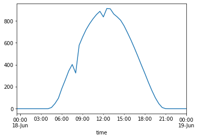
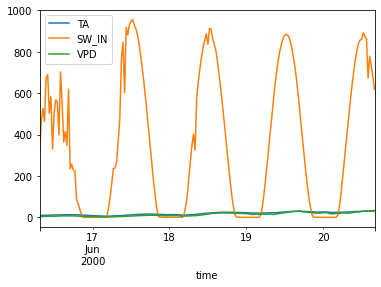
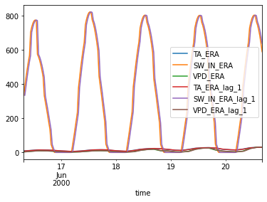

%load_ext autoreload
%autoreload 2Fill one day gap in SW_IN
from meteo_imp.kalman.fastai import *
from meteo_imp.kalman.fastai import _add_lags_df
from meteo_imp.kalman.filter import *
from meteo_imp.utils import *
from meteo_imp.data import *
from fastai.tabular.learner import *
from fastai.learner import *
from fastai.callback.all import *
from fastai.vision.data import get_grid
from fastcore.foundation import L
from fastcore.transform import *
from meteo_imp.kalman.fastai import show_results
import pandas as pd
import numpy as np
import torch
import matplotlib.pyplot as plt
from sklearn.decomposition import PCAfrom ipywidgets import widgets, HBox, VBox
from typing import Sequenceclass InteractiveSequence():
def __init__(self,s: Sequence, start=0):
self.s =s
self.i = start
self.output = widgets.Output()
self.button_next = widgets.Button(description="Next", icon="arrow-right")
self.button_prev = widgets.Button(description="Previous", icon="arrow-left", disabled=True)
self.button_next.on_click(self.on_next)
self.button_prev.on_click(self.on_prev)
self.label = widgets.Label(f"of {len(self.s)-1}")
self.slider = widgets.IntSlider(start, 0, len(s)-1, 1)
self.slider.observe(self.on_slide, names="value")
def update_view(self):
self.button_enable()
self.slider.value = self.i
with self.output:
display(self.s[self.i])
self.output.clear_output(wait=True)
def button_enable(self):
if self.i < len(self.s) - 1: self.button_next.disabled = False
else: self.button_next.disabled = True
if self.i == 0: self.button_prev.disabled = True
else: self.button_prev.disabled = False
def on_next(self, b):
self.i +=1
self.update_view()
def on_prev(self, b):
self.i -=1
self.update_view()
def on_slide(self, change):
self.i = change['new']
self.update_view()
def __call__(self):
self.update_view()
display(VBox([HBox([self.slider, self.label]), HBox([self.button_prev, self.button_next])]), self.output)reset_seed()hai = pd.read_parquet(hai_path64)
hai_era = pd.read_parquet(hai_era_path64)hai[8_110:8_160].SW_IN.plot()<AxesSubplot: xlabel='time'>
df = hai[8_110-80:8_160+80]
control = _add_lags_df(hai_era.loc[df.index], 1)df.plot()<AxesSubplot: xlabel='time'>
control.plot()<AxesSubplot: xlabel='time'>
df.columnsIndex(['TA', 'SW_IN', 'VPD'], dtype='object')mask = df.astype(dtype=bool)
mask.iloc[:,:] = True
mask.iloc[100:115, 1] = Falsemask.sum(0)TA 210
SW_IN 195
VPD 210
dtype: int64pipe = Pipeline([MeteoImpDf2Tensor, MeteoImpNormalize(*get_stats(df), *get_stats(control)), ToTuple])pipe[1]MeteoImpNormalize -- {'mean_data': tensor([ 18.2214, 355.5345, 13.8018], dtype=torch.float64), 'std_data': tensor([ 7.3713, 336.5250, 8.4760], dtype=torch.float64), 'mean_control': tensor([ 16.4072, 325.8798, 10.0621, 16.3431, 324.6188, 9.9632], dtype=torch.float64), 'std_control': tensor([ 6.5264, 307.3572, 7.4125, 6.4755, 307.5501, 7.2901], dtype=torch.float64)}
(MeteoImpTensor,object) -> encodes
(MeteoImpTensor,object) -> decodes (NormalsParams,object) -> decodes
data = MeteoImpDf(df, mask, control)input, targ = pipe(data)
input = input[0].unsqueeze(0), input[1].unsqueeze(0), input[2].unsqueeze(0),
targ = targ[0].unsqueeze(0), targ[1].unsqueeze(0), targ[2].unsqueeze(0), # input[0][~input[1]] = torch.nan k = KalmanFilter.init_local_slope_pca(3,3, df)kKalman Filter (3 obs, 6 state, 6 contr)
$A$
| state | x_0 | x_1 | x_2 | x_3 | x_4 | x_5 |
|---|---|---|---|---|---|---|
| x_0 | 1.0000 | 0.0000 | 0.0000 | 1.0000 | 0.0000 | 0.0000 |
| x_1 | 0.0000 | 1.0000 | 0.0000 | 0.0000 | 1.0000 | 0.0000 |
| x_2 | 0.0000 | 0.0000 | 1.0000 | 0.0000 | 0.0000 | 1.0000 |
| x_3 | 0.0000 | 0.0000 | 0.0000 | 1.0000 | 0.0000 | 0.0000 |
| x_4 | 0.0000 | 0.0000 | 0.0000 | 0.0000 | 1.0000 | 0.0000 |
| x_5 | 0.0000 | 0.0000 | 0.0000 | 0.0000 | 0.0000 | 1.0000 |
$Q$
| state | x_0 | x_1 | x_2 | x_3 | x_4 | x_5 |
|---|---|---|---|---|---|---|
| x_0 | 0.1000 | 0.0000 | 0.0000 | 0.0000 | 0.0000 | 0.0000 |
| x_1 | 0.0000 | 0.1000 | 0.0000 | 0.0000 | 0.0000 | 0.0000 |
| x_2 | 0.0000 | 0.0000 | 0.1000 | 0.0000 | 0.0000 | 0.0000 |
| x_3 | 0.0000 | 0.0000 | 0.0000 | 0.1000 | 0.0000 | 0.0000 |
| x_4 | 0.0000 | 0.0000 | 0.0000 | 0.0000 | 0.1000 | 0.0000 |
| x_5 | 0.0000 | 0.0000 | 0.0000 | 0.0000 | 0.0000 | 0.1000 |
$b$
| state | offset |
|---|---|
| x_0 | 0.0000 |
| x_1 | 0.0000 |
| x_2 | 0.0000 |
| x_3 | 0.0000 |
| x_4 | 0.0000 |
| x_5 | 0.0000 |
$H$
| variable | x_0 | x_1 | x_2 | x_3 | x_4 | x_5 |
|---|---|---|---|---|---|---|
| y_0 | 0.0050 | 0.6587 | -0.7524 | 0.0000 | 0.0000 | 0.0000 |
| y_1 | 1.0000 | -0.0083 | -0.0006 | 0.0000 | 0.0000 | 0.0000 |
| y_2 | 0.0066 | 0.7524 | 0.6587 | 0.0000 | 0.0000 | 0.0000 |
$R$
| variable | y_0 | y_1 | y_2 |
|---|---|---|---|
| y_0 | 0.0100 | 0.0000 | 0.0000 |
| y_1 | 0.0000 | 0.0100 | 0.0000 |
| y_2 | 0.0000 | 0.0000 | 0.0100 |
$d$
| variable | offset |
|---|---|
| y_0 | 0.0000 |
| y_1 | 0.0000 |
| y_2 | 0.0000 |
$B$
| state | c_0 | c_1 | c_2 | c_3 | c_4 | c_5 |
|---|---|---|---|---|---|---|
| x_0 | -0.0050 | -1.0000 | -0.0066 | 0.0050 | 1.0000 | 0.0066 |
| x_1 | -0.6587 | 0.0083 | -0.7524 | 0.6587 | -0.0083 | 0.7524 |
| x_2 | 0.7524 | 0.0006 | -0.6587 | -0.7524 | -0.0006 | 0.6587 |
| x_3 | 0.0000 | 0.0000 | 0.0000 | 0.0000 | 0.0000 | 0.0000 |
| x_4 | 0.0000 | 0.0000 | 0.0000 | 0.0000 | 0.0000 | 0.0000 |
| x_5 | 0.0000 | 0.0000 | 0.0000 | 0.0000 | 0.0000 | 0.0000 |
$m_0$
| state | mean |
|---|---|
| x_0 | 0.0000 |
| x_1 | 0.0000 |
| x_2 | 0.0000 |
| x_3 | 0.0000 |
| x_4 | 0.0000 |
| x_5 | 0.0000 |
$P_0$
| state | x_0 | x_1 | x_2 | x_3 | x_4 | x_5 |
|---|---|---|---|---|---|---|
| x_0 | 3.0000 | 0.0000 | 0.0000 | 0.0000 | 0.0000 | 0.0000 |
| x_1 | 0.0000 | 3.0000 | 0.0000 | 0.0000 | 0.0000 | 0.0000 |
| x_2 | 0.0000 | 0.0000 | 3.0000 | 0.0000 | 0.0000 | 0.0000 |
| x_3 | 0.0000 | 0.0000 | 0.0000 | 3.0000 | 0.0000 | 0.0000 |
| x_4 | 0.0000 | 0.0000 | 0.0000 | 0.0000 | 3.0000 | 0.0000 |
| x_5 | 0.0000 | 0.0000 | 0.0000 | 0.0000 | 0.0000 | 3.0000 |
pred = k(input)_LinAlgError: linalg.cholesky: (Batch element 0): The factorization could not be completed because the input is not positive-definite (the leading minor of order 2 is not positive-definite).loss_f = KalmanLoss(only_gap=True)
loss_f_all = KalmanLoss(only_gap=False)loss_f(pred, targ) NameError: name 'pred' is not definedpipe1 = Pipeline(pipe.fs[-2,-1])pipe1Pipeline: MeteoImpNormalize -- {'mean_data': tensor([ 18.2214, 355.5345, 13.8018], dtype=torch.float64), 'std_data': tensor([ 7.3713, 336.5250, 8.4760], dtype=torch.float64), 'mean_control': tensor([ 16.4072, 325.8798, 10.0621, 16.3431, 324.6188, 9.9632],
dtype=torch.float64), 'std_control': tensor([ 6.5264, 307.3572, 7.4125, 6.4755, 307.5501, 7.2901],
dtype=torch.float64)} -> ToTupledef plot_pred(pred, data, control=True):
pred_dec = preds2df([pipe.decode(pred)], [data])[0]
data_pred = pd.merge(data.tidy(hai_control), pred_dec.tidy(), on=["time", "variable"])
# title = [f"loss: {loss.item():.6f}"] + [format_metric(name, val) for name, val in metrics.items()]
return plot_variable(data_pred, variable="SW_IN", ys=["value", "mean", "control"], error=True, control=control)plot_pred(pred, data)NameError: name 'pred' is not definedfrom tqdm.auto import tqdmdef train(k, data_gen, loss_f, n_iter, lr, control=True):
k.train()
data, input, targ = data_gen
optimizer = torch.optim.Adam(k.parameters(), lr=lr)
t_info = pd.DataFrame(columns=['loss', 'rmse_gap', 'rmse', 'plot'])
pd.DataFrame({k: pd.Series(dtype=t) for k, t in [('loss', float), ('rmse_gap', float), ('rmse', float), ('plot', object)]})
for i in tqdm(range(n_iter)):
# Zero gradients from previous iteration
optimizer.zero_grad()
# Output from model
pred= k(input)
loss = loss_f(pred, targ)
t_info.loc[i, 'loss'] = loss_f(pred, targ).item()
t_info.loc[i, 'loss_all'] = loss_f_all(pred, targ).item()
t_info.loc[i, 'rmse_gap'] = rmse_gap(pred, targ)
t_info.loc[i, 'rmse'] = rmse_mask(pred, targ)
t_info.loc[i, 'plot'] = plot_pred(pred, data, control)
# backpropagate gradients
loss.backward()
optimizer.step()
return t_infodef data_gen_one_gap(df, g_inter, df_control, device='cpu', all_gap=False):
control = _add_lags_df(df_control.loc[df.index], 1)
mask = df.astype(dtype=bool)
mask.iloc[:,:] = True
col_sel = [0,1,2] if all_gap else 1
mask.iloc[g_inter[0]:g_inter[1], col_sel] = False
pipe = Pipeline([MeteoImpDf2Tensor, MeteoImpNormalize(*get_stats(df), *get_stats(control)), ToTuple])
data = MeteoImpDf(df, mask, control)
input, targ = pipe(data)
input = input[0].unsqueeze(0).to(device), input[1].unsqueeze(0).to(device), input[2].unsqueeze(0).to(device),
targ = targ[0].unsqueeze(0).to(device), targ[1].unsqueeze(0).to(device), targ[2].unsqueeze(0).to(device),
return data, input, targdef plot_train_info(t_info):
ax = get_grid(4,2,2, figsize=(8,6))
t_info.loss.plot(ax=ax[0], title="loss gap")
t_info.loss_all.plot(ax=ax[1], title="loss all")
t_info.rmse.plot(ax=ax[2], title="rmse")
t_info.rmse_gap.plot(ax=ax[3], title="rmse gap")
InteractiveSequence(t_info['plot'], start=len(t_info)-1)()Loss gap
data_gen0 = data_gen_one_gap(hai[8_110-80:8_160+80], (95, 120), hai_era )k0 = KalmanFilter.init_local_slope_pca(3,3, None)
t_info0 = train(k0, data_gen0, loss_f, 40, 1e-2)
plot_train_info(t_info0)NameError: name '_smooth_gain' is not definedk = KalmanFilter.init_local_slope_pca(3,3, None)
t_info = train(k, (data, input, targ), loss_f, 40, 1e-2)NameError: name '_smooth_gain' is not definedax = get_grid(4,2,2, figsize=(8,6))
t_info.loss.plot(ax=ax[0], title="loss gap")
t_info.loss_all.plot(ax=ax[1], title="loss all")
t_info.rmse.plot(ax=ax[2], title="rmse")
t_info.rmse_gap.plot(ax=ax[3], title="rmse gap")InteractiveSequence(t_info['plot'])()Loss not gap
k = KalmanFilter.init_local_slope_pca(3,3, df)
t_info_all = train(k, loss_f_all, 00)ax = get_grid(4,2,2, figsize=(8,6))
t_info_all.loss.plot(ax=ax[0], title="loss gap")
t_info_all.loss_all.plot(ax=ax[1], title="loss all")
t_info_all.rmse.plot(ax=ax[2], title="rmse")
t_info_all.rmse_gap.plot(ax=ax[3], title="rmse gap")int_s = InteractiveSequence(t_info_all['plot'])()kBigger gap
data_gen = data_gen_one_gap(hai[8_110-80:8_160+80], (95, 120), hai_era )k2 = KalmanFilter.init_local_slope_pca(3,3, None)
t_info2 = train(k2, data_gen, loss_f_all, 20, 1e-2)
plot_train_info(t_info2)t_data_gen = data_gen_one_gap(hai[8_110-80:8_160+80], (120, 130), hai_era )
plot_pred(k2(t_data_gen[1]), t_data_gen[0])k2k2 = KalmanFilter.init_local_slope_pca(3,3, None)
t_info2 = train(k2, data_gen, loss_f, 20, 1e-2)
plot_train_info(t_info2)1 day of gap
data_gen3 = data_gen_one_gap(hai[8_110-80:8_160+80], (80, 150), hai_era )k3 = KalmanFilter.init_local_slope_pca(3,3, None)
train(k3, data_gen3, loss_f_all, 5, 1e-2) # get to decent parameters
# k3.trans_cov = k3.trans_cov * 0.01
t_info3 = train(k3, data_gen3, loss_f_all, 40, 1e-2)plot_train_info(t_info3)t_info3.iloc[-2:-1]k3k0.trans_cov, k3.trans_covk0.trans_matrix, k3.trans_matrixk0 = KalmanFilter.init_local_slope_pca(3,3, None)
def par_diff(k0, k1):
out = {}
for (n,p0), (_,p1) in zip(k0.named_parameters(), k1.named_parameters()):
out[n] = (p0-p1).abs().mean().detach().item()
return pd.DataFrame(out,index=[0])par_diff(k0, k3)par_diff(k2, k3)par_diff(k0, k2)Gap in all variables
data_gen_gall = data_gen_one_gap(hai[8_110-80:8_160+80], (90, 130), hai_era, all_gap=True)k_gall = KalmanFilter.init_local_slope_pca(3,3)t_info_gall = train(k_gall, data_gen_gall, loss_f_all, 40, 1e-2)plot_train_info(t_info_gall)Random Init
data_gen4 = data_gen_one_gap(hai[8_110-80:8_160+80], (80, 150), hai_era)k4 = KalmanFilter.init_random(3,3,6, dtype=torch.float64)t_info4 = train(k4, data_gen4, loss_f_all, 100, 1e-2)plot_train_info(t_info4)t_info4 = train(k4, data_gen4, loss_f_all, 100, 3e-2)plot_train_info(t_info4)k4Small state
Local slope init
data_gen_sls = data_gen_one_gap(hai[8_110-80:8_160+80], (80, 150), hai_era)k_sls = KalmanFilter.init_local_slope_pca(3,1, hai)t_info_sls = train(k_sls, data_gen_sls, loss_f_all, 70, 2e-2)plot_train_info(t_info_sls)Random
data_gen5 = data_gen_one_gap(hai[8_110-80:8_160+80], (80, 150), hai_era)k5 = KalmanFilter.init_random(3,1,6, dtype=torch.float64)t_info5 = train(k5, data_gen5, loss_f_all, 200, 2e-2)plot_train_info(t_info5)t_info5 = train(k5, data_gen5, loss_f_all, 200, 2e-2)plot_train_info(t_info5)t_info5 = train(k5, data_gen5, loss_f_all, 500, 2e-2)plot_train_info(t_info5)t_info5 = train(k5, data_gen4, loss_f_all, 100, 3e-2)plot_train_info(t_info5)k4Filter only
data_gen6 = data_gen_one_gap(hai[8_110-80:8_160+80], (95, 120), hai_era )k6 = KalmanFilter.init_local_slope_pca(3,3, None)
k6.use_smooth = False
# train(k6, data_gen6, loss_f_all, 5, 1e-2) # get to decent parameters
# k3.trans_cov = k3.trans_cov * 0.01
t_info6 = train(k6, data_gen5, loss_f_all, 25, 1e-2)plot_train_info(t_info6)No Control
Gap in SW_IN only
data_gen_nc = data_gen_one_gap(hai[8_110-80:8_160+80], (80, 150), hai_era.sample(frac=1).reset_index(drop=True).set_index(hai_era.index) )k_nc = KalmanFilter.init_local_slope_pca(3,3, None, use_control=False)
# k3.trans_cov = k3.trans_cov * 0.01
t_info_nc = train(k_nc, data_gen_nc, loss_f_all, 20, 1e-2)plot_train_info(t_info_nc)data, input, targ = data_gen_nct_data_g = data_gen_one_gap(hai[8_110-80:8_160+80], (120, 200), hai_era) plot_pred(k_nc(t_data_g[1]), t_data_g[0])Gap all variables
data_gen_nc2 = data_gen_one_gap(hai[8_110-80:8_160+80], (95, 105),
hai_era,#.sample(frac=1).reset_index(drop=True).set_index(hai_era.index),
all_gap=True)k_nc2 = KalmanFilter.init_local_slope_pca(3,3, None, use_control=False)
# k3.trans_cov = k3.trans_cov * 0.01
t_info_nc2 = train(k_nc2, data_gen_nc2, loss_f_all, 20, 1e-2)plot_train_info(t_info_nc2)data_gen_nc3 = data_gen_one_gap(hai[8_110-80:8_160+80], (90, 130),
hai_era.sample(frac=1).reset_index(drop=True).set_index(hai_era.index),
all_gap=True)k_nc3 = KalmanFilter.init_local_slope_pca(3,3,None, use_control=False)
# k3.trans_cov = k3.trans_cov * 0.01
t_info_nc3 = train(k_nc3, data_gen_nc3, loss_f_all, 20, 1e-2, control=False)plot_train_info(t_info_nc3)